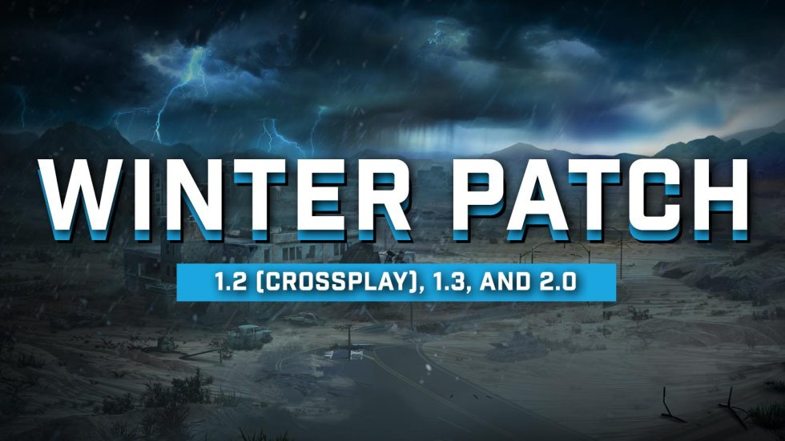

Зимний патч

В преддверии праздничных каникул мы решили сообщить сообществу о состоянии наших планов по созданию зимнего патча. Читайте дальше, чтобы узнать больше.
Обновление версии 1.2
Мы успешно прошли сертификацию для патча версии 1.2 на консолях и только что выпустили его на ПК для дальнейшего тестирования. Патч станет стабильным на ПК до начала праздничных каникул, а затем будет выпущен на PlayStation 5 и Xbox Series X/S как можно скорее, если не возникнут критические ошибки. Полные примечания к выпуску ниже.
Обновление версии 1.3
Мы добились значительного прогресса с японской версией для PlayStation 5, но ожидаем, что она пройдет сертификацию после праздничных каникул, а выпуск запланирован на январь 2025 года, при условии отсутствия критических ошибок и получения одобрения CERO.
Обновление версии 2.0: Storms Brewing
Наши предыдущие оценки сроков выпуска обновления Storms Brewing оказались излишне оптимистичными. Обновление продвигается хорошо, но мы ожидаем его выхода в конце первого квартала 2025 года. Хотя это позже, чем планировалось, функции из версии 1.2 будут выпущены раньше. Storms Brewing включит в себя:
- Полностью новую систему выживания в погодных условиях с уникальными типами повреждений окружающей среды, способами лечения и вызовами для каждого биома.
- Кроссплатформенную игру на выделенных серверах.
- Расширенных новых зомби с радиацией, которые появляются по мере развития игры.
- Обновленные деревья для повышения производительности и новые виды биомов.
- Обновленные модели предметов еды и напитков в руках персонажа.
- Новую систему субтитров.
- Новую приоритетную систему сообщений на панели инструментов.
- Оптимизацию инструмента появления зомби для сложных POI (точек интереса).
- Новую систему гардероба игроков, которая позволяет сохранить защитные свойства одежды, но менять её внешний вид.
- Новые комплекты одежды для игроков в DLC.
- Twitch-дропы.
- Множество исправлений ошибок, улучшений баланса, оптимизаций и новых функций для повышения удобства. Слишком много, чтобы перечислить сейчас.
Официальные примечания к версии 1.2
RWG для консолей
Мы добавили возможность использовать случайную генерацию мира для консолей, которая позволяет создавать миры размером до 8192.
Кроссплатформенная игра для ПК и консолей (Peer-to-Peer, пока без выделенных серверов)
- ПК (Windows, Mac, Linux), PS5 и Xbox Series X/S могут создавать и подключаться к многопользовательским P2P-сессиям с игроками на других платформах.
- Ограничения по количеству игроков для хостинга многопользовательских сессий зависят от устройства.
- Для ПК необходимо включить Easy Anti Cheat, чтобы хостить или подключаться к кроссплатформенным сессиям.
- Добавлена поддержка блокировки игроков с других платформ.
- Клиенты на консолях могут подключаться к мирам больше 8k, хотя сами они не могут их создавать или хостить.
- Жестких ограничений на количество игроков для кроссплатформенной игры пока не установлено, но опыт игроков будет зависеть от оборудования хоста и ситуации (например, более 6 игроков в одной области во время кровавой луны может стать испытанием для некоторых устройств).
Оптимизация производительности рендеринга
Общая производительность рендеринга улучшена за счет уменьшения нагрузки, связанной с обработкой нескольких камер в режиме от первого лица, что значительно оптимизирует производительность на всех платформах.
Улучшения качества рендеринга
- Аватар игрока в режиме от первого лица теперь учитывает тени и отражения окружающей среды на всех платформах.
Графические настройки для консолей
- Добавлены предустановки графики "Производительность" и "Качество" для каждой платформы. Предустановки "Производительность" отдают приоритет более высокому FPS, а "Качество" — разрешению рендера.
- Поддержка AMD FidelityFX™ Super Resolution (FSR), которая может быть включена в режимах производительности или качества.
Улучшения FSR
- Уменьшены размытые артефакты при просмотре деревьев с включенным FSR.
- Улучшена общая четкость изображения при использовании FSR.
- Обновлена версия FSR до 3.1.
Исправления ошибок
- Игра будет оставаться на паузе (где возможно) при открытии окна сообщения об ошибке.
- Улучшено восстановление в случаях, когда игрок проваливается сквозь мир из-за отсутствия геометрии.
Изменения и исправления в версии 1.2 b22, b24 и Хотфикс b25
Добавлено:
- Кроссплатформенные черные списки.
- Реализованы режимы графики "Производительность/Качество" для консолей, доступные через настройки видео.
- Новая модель Зомби-стервятника.
- Новые модели Кролика и Курицы.
- Задержки спавна в биомах теперь имеют 10% случайную вариацию.
- Звук экстренного вещания на CRT-телевизорах (*включается вместе со светом).
- Группы спящих сбрасывают доступные точки спавна, если все уже были использованы.
- Деревья в менеджере декораций группируются с асинхронной загрузкой и равномерным распределением нагрузки.
- Дополнительные префабы пламени для Тлеющих зомби.
- Звуковые эффекты для бонуса крафта из Прикида ботана.
- Исправлены отсутствующие текстуры искр для мин.
- Максимальное количество активных зомби во время кровавой луны в группе теперь масштабируется в зависимости от полного состава группы игроков и уровня игры.
Изменено:
- Переработан рендеринг от первого лица с использованием одной камеры.
- Отключено старое масштабирование разрешения и включен FSR в режиме "Производительность" на всех консольных платформах.
- Включены элементы меню RWG для консолей.
- Разрешено открывать окно чата, даже если связь заблокирована.
- Реализован просмотр профиля пользователя для PS5.
- Оптимизированы группы эффектов сущностей, убраны дублирующие параметры предков.
- Улучшены спавнеры сущностей в биомах: таймеры работают независимо от количества, что исключает превышение лимита спавна.
- Перебалансированы параметры и задержки спавна сущностей в биомах.
- Убран проверочный скрипт для спавна спящих в самой дальней позиции.
- Улучшены правила деспавна активных спящих для большего расстояния и времени.
- Оптимизирована очистка материалов.
- Оптимизирован пул объектов и контейнеры.
- Оптимизированы объемы стен чанков.
- Настройка яркости видео затемняет интерьер и ночь при уровне ниже 50%.
- Немного уменьшена самая темная зона лунного света.
- У модификации Налобного фонаря уменьшен радиус действия.
- Оптимизирован поиск объектов в дочерних элементах.
- Оптимизирован поиск типа модели для спавна сущностей.
- Обновлены звуки Скримера.
- Солнечные батареи больше нельзя перерабатывать.
- Кабан-мутант ("Грейс") больше не является пищей для зомби.
- Оптимизированы транспортные средства, чтобы они больше не использовали объект-контейнер.
- Увеличено расстояние, на котором можно добавлять игроков в группу на кровавую луну.
Исправлено:
- "Железные потроха" не применялись при входе в игру.
- Друзья Xbox/PS5 не отображались в браузере серверов.
- Превью RWG не удаляло некоторые обработчики кнопок при закрытии.
- Сервер не логировал имена отправителей чата.
- NRE и потеря управления при разрушении знака или ящика во время ввода текста.
- Копирование + вставка уничтожали вкладки и переносы строк.
- Ошибка загрузки префабов с ExcludePOICulling=true из-за устаревших файлов ins.
- Группы эффектов не наследовались в правильном порядке в XML-классе сущностей.
- Менеджер транспортных средств повторно спавнил транспорт, если другой объект имел тот же ID.
- Таймер зомби-спавнера в биоме мог быть отключен, если игрок ни разу не убивал зомби (старые данные удаляются, и спавн возобновляется).
- Спавнеры в биомах могли конфликтовать, используя одни и те же данные статуса.
- Проблема с LOD стрел при увеличении и уменьшении масштаба, когда лук натянут.
- Отсутствие респавна в мини-скриптах групп спящих, если сущность деспавнилась.
- Задержка при падении игрока зависела от частоты кадров.
- Простые префабы вроде part_streetlight_single создавали пустую сетку-импостер.
- Чанки, копируемые в Unity, могли изредка содержать неправильные объекты, блокируя копирование.
- Простейшая одежда имела проблему чтения/записи.
- Исключения и NRE при выходе в главное меню.
- Объемы стен добавлялись в чанки, которые они не перекрывали, и имели ненужные отступы.
- Группы спящих и триггеры добавлялись в чанки, которые они не перекрывали.
- Батареи и солнечные панели издавали звуки при повторном входе в игру.
- Факелы, размещенные игроком, имели дублирующий аудиоплеер.
- Источники звука с эффектом доплера могли скрипеть или пропадать при телепортации игрока или изменении координат мира.
- Менеджер звуков продолжал отслеживать уничтоженные звуки.
- Настройка обилия лута ниже 100% давала меньше, чем ожидалось.
- Событие Twitch "Камень призыва" не должно автоматически респавниться.
- Тактическая штурмовая винтовка отсутствовала в модели коллиматорного прицела.
- Морфинг головного убора не отображался в режиме от первого лица.
- Инвентарь дрона мог откатиться как у клиента при использовании мода на лечение.
- Дрон не мог лечить игрока, находясь на транспорте.
- Первый раз, когда дрон пытался вылечить игрока после дебаффа, он не справлялся.
- Невидимый персонаж при перемещении от торговца на транспортном средстве.
- Сбои положения камеры транспортного средства при смещении точки отсчета.
- Предупреждения EntityFactory GetEntityType, связанные с отсутствующими типами.
- Почти невидимые движущиеся животные при определенных настройках FSR.